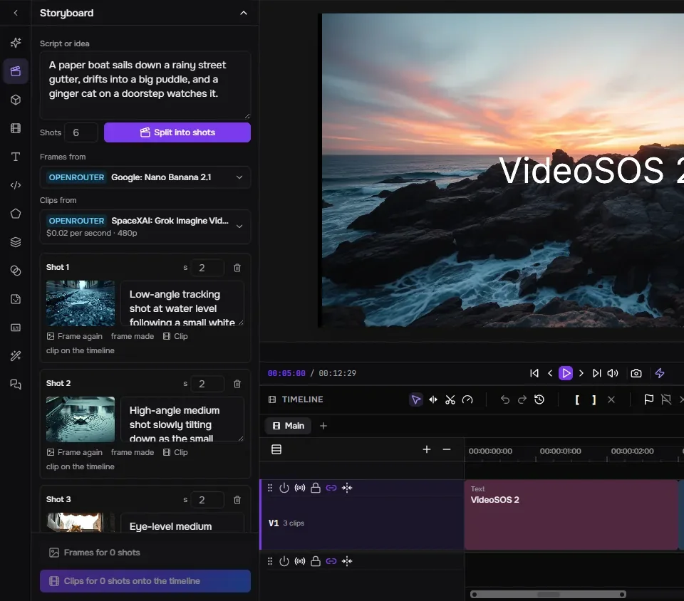
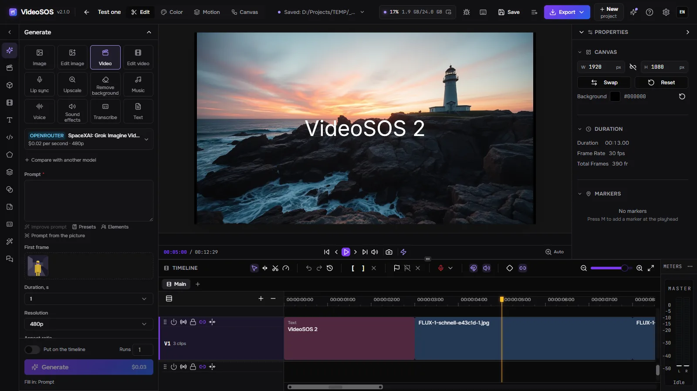
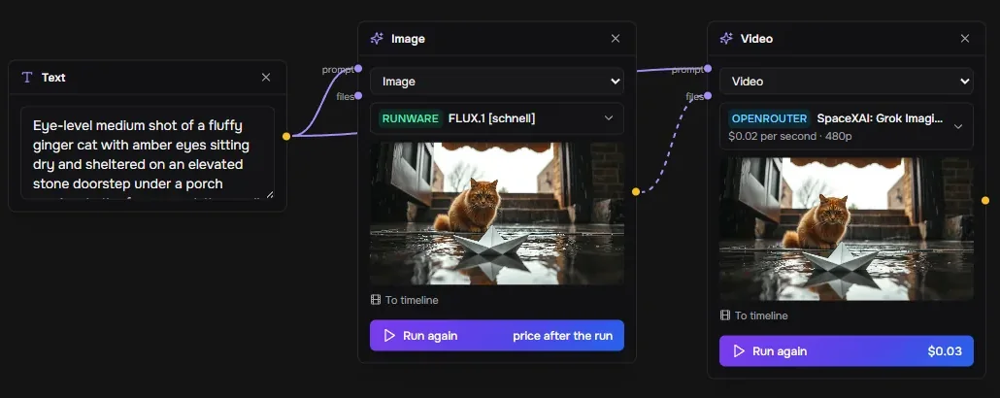
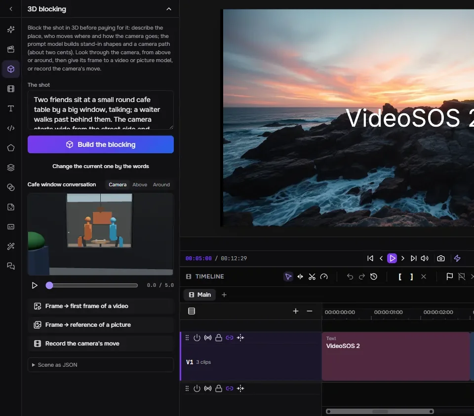
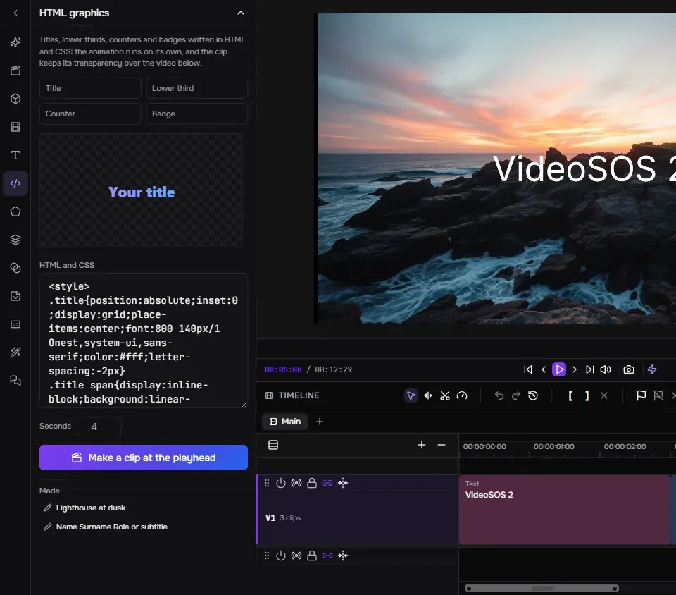
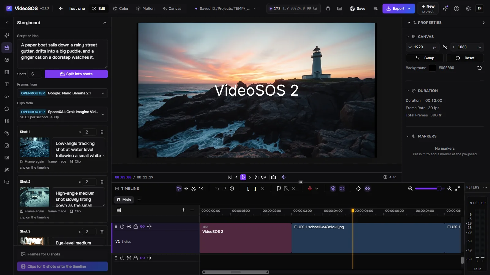
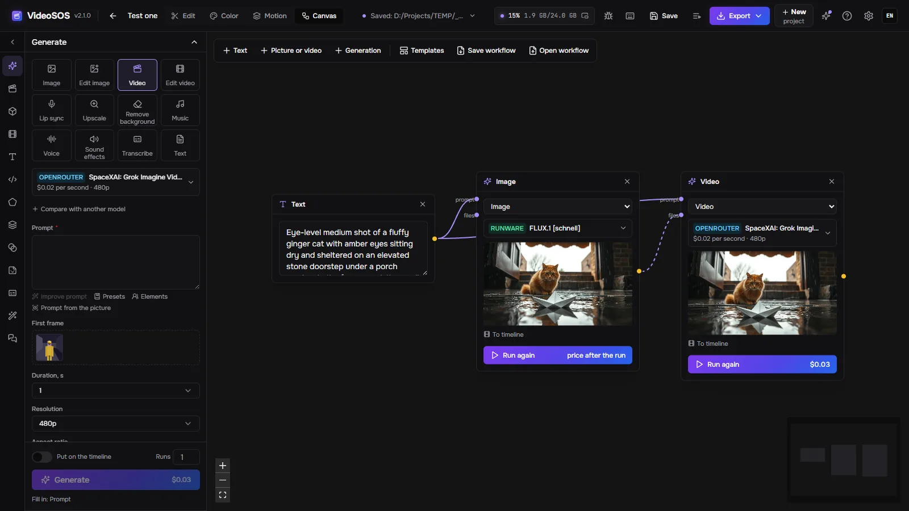
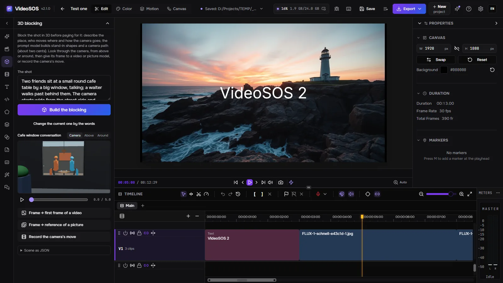
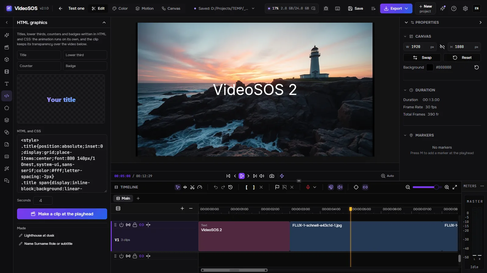

Storyboard

A language model splits a script into shots; each shot gets a frame from a picture model and a clip from a video model that starts on that frame, and the clips land on the timeline one after another.
VideoSOS puts the best image, video, music and voice models of OpenRouter, fal and Runware next to a real multitrack editor. Plan the film on a storyboard, a node canvas and a 3D blocking, generate every shot with your own keys at the price shown before you run, and cut it into a finished video — or let an AI agent do it with you.
Windows 10/11, Linux (experimental) and macOS on Apple Silicon (experimental). A graphics card with WebGPU for the preview and the export. Generation needs a key of OpenRouter, fal or Runware — you pay them directly. Pictures and video with sound can also be made free on your own card (Windows).

Generation, planning and editing in one program, with your files on your disk.

A language model splits a script into shots; each shot gets a frame from a picture model and a clip from a video model that starts on that frame, and the clips land on the timeline one after another.

Text, pictures, videos and generations are nodes joined by what they pass on.

Describe the shot and a language model builds it from stand-in shapes, standing and seated people, their moves and the camera’s path.

Titles, lower thirds, counters and badges in HTML and CSS, previewed live and made into a clip with transparency that lies over the video at the playhead.
Twelve tasks: images, edits, video from text or a frame, video edits, lip sync, upscale, background removal, music, voices, sound effects, transcripts and texts — over a thousand models of OpenRouter, fal and Runware, read live from the providers.
The form is drawn from the model’s own description and the price is worked out from it before you press Generate; after the run the provider’s own bill is recorded. A daily limit holds agents back.
The same prompt goes to up to two more models, and the results stand side by side with their prices.
A character, an object or a place kept under a name with its pictures: @name in a prompt sends them to the model, so the same face comes back shot after shot.
A run is drawn on the timeline where it will land while it runs; a part of any clip is generated again in place; the next clip continues from the last frame of the previous one.
Multiple video and audio tracks, ripple, rolling, slip and slide trims, transitions, keyframes with a Bezier graph, masks, blend modes, color grading with scopes, text, shapes and captions. Fast export to MP4, WebM, MOV or MKV on the graphics card, or FCPXML for Final Cut, DaVinci Resolve and Premiere.
Connect Claude Code, Claude Desktop, Cursor or Codex and the agent does what the window does: picks models, estimates prices, generates, edits the timeline step by step, blocks shots in 3D, makes graphics and exports. The timeline is kept before every agent’s edit, an edit can be rehearsed first, and you can ask to accept each one yourself.
An OpenRouter model of your choice works the program with the same tools, step by step, with each step’s cost and a Stop button.
A YouTube link, any site yt-dlp knows or a direct file goes into the library with progress, cancel and resume.
No account of ours: you pay the providers directly. Projects and generations are plain files on your disk; a job is saved before it is sent and never paid twice, and results are downloaded before the providers’ links expire.
English, Russian, German, Spanish, French, Japanese, Korean, Brazilian Portuguese, Turkish and Chinese, effects and their parameters included.
A proxy for the providers and downloads, and access from the network: a browser on another computer or a phone opens the same interface with an access key while everything runs here.
MiniMax-H3 and LTX-2.5, video with sound, run on this computer through stable-diffusion.cpp (CUDA, Vulkan or the processor), quantized and with accelerator presets — no key and no bill. Files another of the author’s programs already has are taken from it instead of downloaded.
While YuE2 Studio, MiniMax Music3 Studio or ACE-Step Studio is open, it appears in Music with its own form; the studio makes the song and its file lands in the library.
While Speech Studio is open, each of its engines here — Qwen3-TTS, Supertonic 3, Drama 3, Higgs Audio — appears in Voice with its voices and languages; the studio voices the text and its file lands in the library.
The program itself, in your language.




Yes. VideoSOS is free and open source (MIT). Generation is paid to the providers with your own keys; editing and export cost nothing.
Not with us. You need a key of at least one provider — OpenRouter, fal or Runware — and you pay that provider directly; VideoSOS never sees your money and never shows your keys to agents.
It depends on the model: the generation form shows the price before every run, from fractions of a cent for a fast picture to dollars for a long video, and the history keeps what each run cost. A storyboard approves cheap frames before the paid clips.
Only what a generation needs goes to the provider you chose. Projects, media and results stay on your disk; anonymous statistics are off unless you turn them on, and never include prompts, files or keys.
Windows 10 and 11 x64; Linux x86-64 and macOS on Apple Silicon as experimental builds. A graphics card with WebGPU runs the preview and the export.
Connect Claude Code, Claude Desktop, Cursor or Codex and the agent does what the window does: picks models, estimates prices, generates, edits the timeline step by step, blocks shots in 3D, makes graphics and exports. The timeline is kept before every agent’s edit, an edit can be rehearsed first, and you can ask to accept each one yourself.
claude mcp add --transport http videosos http://127.0.0.1:8796/mcp
A Tauri shell runs the Rust server in the same process; the window is a fork of the FreeCut editor with the generation panel, storyboard, canvas, 3D blocking and the agent bridge added. Jobs live in SQLite, files on your disk.
React window (FreeCut fork) ─┐
├─ VideoSOS.exe (Tauri shell + Rust/axum server inside)
Rust axum server ────────────┘ │
├─ OpenRouter · fal · Runware (your keys)
└─ MCP http://127.0.0.1:8796/mcp